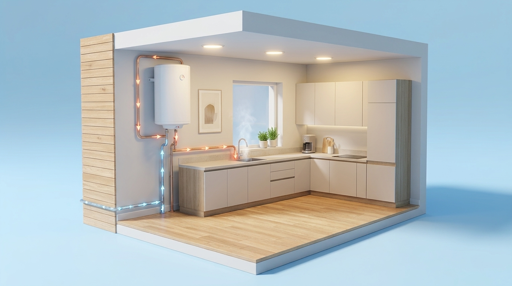

Diagnosis and repair
We assess water heating difficulties, intermittent operation, leaks and other faults. Proposed work depends on diagnosis and equipment condition.

Help to restore your hot water comfort. We assess the equipment, explain intervention options and present service conditions before acceptance.
Request assistance
We assess water heating difficulties, intermittent operation, leaks and other faults. Proposed work depends on diagnosis and equipment condition.
We check heating and temperature-control components and assess replacement needs. Parts are selected for compatibility and according to manufacturer instructions, subject to availability.
We help choose equipment according to usage needs and site conditions. We assess connections and necessary work. Removal of old equipment and any adaptations must be expressly included in the quotation.
Maintenance is adapted to the model and manufacturer recommendations. It may include cleaning, checking components and connections, temperature assessment and safety-device checks.
We assess scale deposits and cleaning or descaling needs, using procedures appropriate to the equipment materials and components.
Depending on the model, we check the safety valve, thermal cut-off devices and corrosion protection, including the anode where applicable. Identified faults are considered in the proposed work.
How it is installed
Example of an electric appliance with a hot water storage tank.
01Mounting suited to the full tank weight and wall conditions.
Hot water → outlets
Cold mains water → appliance
02Water connections
03Distribution to taps and showers according to household demand.
Simplified conceptual diagram, not to scale: not an installation guide. Configuration depends on the appliance, design and manufacturer instructions. The lines do not represent a return circuit.
These signs help describe your request but cannot establish a cause without technical assessment. Open a topic to read more.
Lack of heating may relate to electrical supply, the heating element, thermostat or controls. Scale accumulation may also require assessment. We examine components and propose suitable work.
We assess temperature control, heating components and, where relevant, water mixing and capacity relative to consumption needs. A solution may involve adjustments or component replacement after diagnosis.
We assess connections, seals, the flange, valve and tank to locate the leak. A tank leak may make repair unfeasible. We explain alternatives and assess replacement without promising to restore the tank.
Noises may have different causes. We assess operating conditions, scale deposits, fixings and components before recommending cleaning, adjustments or repair.
Tripping protection, intermittent heating, a burning smell or a sensation of electric shock require assessment of equipment and installation safety. Work is defined after diagnosis, without prematurely attributing the cause to a specific part.
We assess whether the issue concerns the equipment, valves, connections or water supply installation. Necessary work and its scope are explained before intervention.
We assess the tank, connections and protective components, including the anode where fitted. Repair feasibility depends on damage extent; equipment replacement may be recommended.
This page does not replace an equipment assessment and does not provide repair instructions.
You may enquire about Vulcano, Junkers, Vaillant, Bosch, Ariston, Siemens, Baxi, Fagor, Cointra, Fleck, Thermor, ACV or Chaffoteaux equipment, among other brands. Assistance is confirmed for the specific model, subject to technical assessment and component availability.
Brands belong to their respective owners. Mention does not imply official representation, authorised assistance, brand-specific training or guaranteed availability of original parts.
Provide the brand, model, location and symptoms.
We confirm availability, appointments and applicable costs, including travel and any diagnosis fee.
Work and price are presented for acceptance. Repair feasibility and required parts depend on assessment.
We serve Cascais, Estoril, Parede, Oeiras, Paço d’Arcos, Sintra, Amadora and Lisbon, subject to availability and travel conditions.
To send an equipment photo, email rpfassistencia@gmail.com and provide the same name used in your request.
Cascais, Estoril, Parede, Oeiras, Paço d’Arcos, Sintra, Amadora and Lisbon.
Availability, scheduling and travel conditions subject to confirmation.
View service area